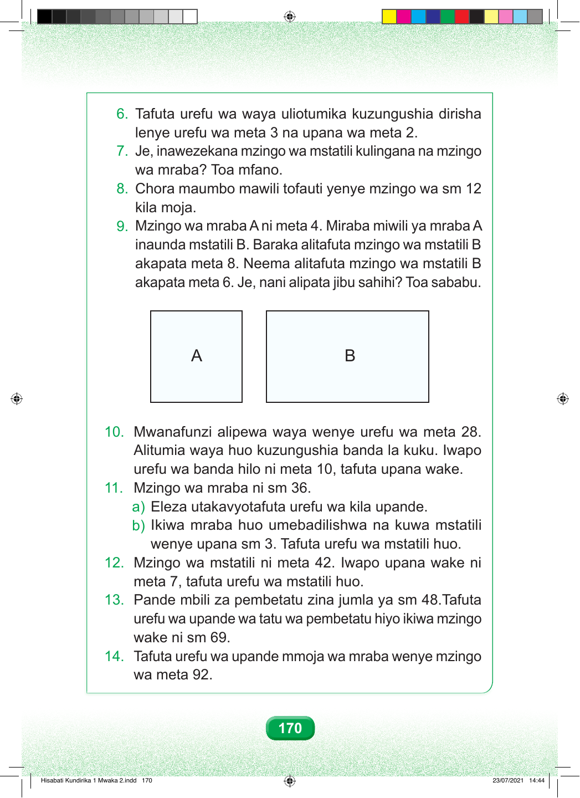

6. Tafuta urefu wa waya uliotumika kuzungushia dirisha lenye urefu wa meta 3 na upana wa meta 2. 7. Je, inawezekana mzingo wa mstatili kulingana na mzingo wa mraba? Toa mfano. 8. Chora maumbo mawili tofauti yenye mzingo wa sm 12 kila moja. 9. Mzingo wa mraba A ni meta 4. Miraba miwili ya mraba A inaunda mstatili B. Baraka alitafuta mzingo wa mstatili B akapata meta 8. Neema alitafuta mzingo wa mstatili B akapata meta 6. Je, nani alipata jibu sahihi? Toa sababu. A B 10. Mwanafunzi alipewa waya wenye urefu wa meta 28. Alitumia waya huo kuzungushia banda la kuku. Iwapo urefu wa banda hilo ni meta 10, tafuta upana wake. 11. Mzingo wa mraba ni sm 36. a) Eleza utakavyotafuta urefu wa kila upande. b) Ikiwa mraba huo umebadilishwa na kuwa mstatili wenye upana sm 3. Tafuta urefu wa mstatili huo. 12. Mzingo wa mstatili ni meta 42. Iwapo upana wake ni meta 7, tafuta urefu wa mstatili huo. 13. Pande mbili za pembetatu zina jumla ya sm 48.Tafuta urefu wa upande wa tatu wa pembetatu hiyo ikiwa mzingo wake ni sm 69. 14. Tafuta urefu wa upande mmoja wa mraba wenye mzingo wa meta 92. 170 Hisabati Kundirika 1 Mwaka 2.indd 170 23/07/2021 14:44